Bayesian calibration of a computer code¶
In this example we are going to compute the parameters of a computer model thanks to Bayesian estimation.
Let us denote
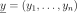
the observation sample,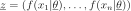
the model prediction,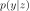
the density function of observation conditional on model prediction
conditional on model prediction 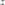
, and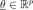
the calibration parameters we wish to estimate.The posterior distribution is given by Bayes theorem:
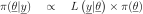
where
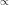
means “proportional to”, regarded as a function of .
.
The posterior distribution is approximated here by the empirical distribution of the sample
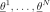
generated by the Metropolis-Hastings algorithm. This means that any quantity characteristic of the posterior distribution (mean, variance, quantile, …) is approximated by its empirical counterpart.Our model (i.e. the compute code to calibrate) is a standard normal linear regression, where
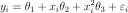
where
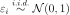
.The “true” value of  is:
is:
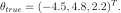
We use a normal prior on :
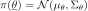
where
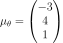
is the mean of the prior and
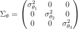
is the prior covariance matrix with
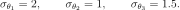
The following objects need to be defined in order to perform Bayesian calibration:
The conditional density
 must be defined as a probability distribution
must be defined as a probability distributionThe computer model must be implemented thanks to the ParametricFunction class. This takes a value of
as input, and outputs the vector of model predictions 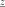
, as defined above (the vector of covariates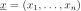
is treated as a known constant). When doing that, we have to keep in mind that will be used as the vector of parameters corresponding to the distribution specified for . For instance, if is normal, this means that must be a vector containing the mean and variance of The prior density
 encoding the set of possible values for the calibration parameters, each value being weighted by its a priori probability, reflecting the beliefs about the possible values of before consideration of the experimental data. Again, this is implemented as a probability distribution
encoding the set of possible values for the calibration parameters, each value being weighted by its a priori probability, reflecting the beliefs about the possible values of before consideration of the experimental data. Again, this is implemented as a probability distributionThe Metropolis-Hastings algorithm that samples from the posterior distribution of the calibration parameters requires a vector
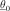
initial values for the calibration parameters, as well as the proposal laws used to update each parameter sequentially.
[1]:
import openturns as ot
[2]:
# Dimension of the vector of parameters to calibrate
paramDim = 3
# The number of obesrvations
obsSize = 10
Define the observed inputs

[3]:
xmin = -2.
xmax = 3.
step = (xmax-xmin)/(obsSize-1)
rg = ot.RegularGrid(xmin, step, obsSize)
x_obs = rg.getVertices()
x_obs
[3]:
| t | |
|---|---|
| 0 | -2.0 |
| 1 | -1.4444444444444444 |
| 2 | -0.8888888888888888 |
| 3 | -0.33333333333333326 |
| 4 | 0.22222222222222232 |
| 5 | 0.7777777777777777 |
| 6 | 1.3333333333333335 |
| 7 | 1.8888888888888893 |
| 8 | 2.4444444444444446 |
| 9 | 3.0 |
Define the parametric model
 that associates each observation and values of the parameters
that associates each observation and values of the parameters  to the parameters of the distribution of the corresponding observation: here
to the parameters of the distribution of the corresponding observation: here  where
where  , the first output of the model, is the mean and
, the first output of the model, is the mean and  , the second output of the model, is the standard deviation.
, the second output of the model, is the standard deviation.
[4]:
fullModel = ot.SymbolicFunction(
['x1', 'theta1', 'theta2', 'theta3'], ['theta1+theta2*x1+theta3*x1^2','1.0'])
model = ot.ParametricFunction(fullModel, [0], x_obs[0])
model
[4]:
ParametricEvaluation([x1,theta1,theta2,theta3]->[theta1+theta2*x1+theta3*x1^2,1.0], parameters positions=[0], parameters=[x1 : -2], input positions=[1,2,3])
Define the observation noise
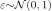
and create a sample from it.
[5]:
ot.RandomGenerator.SetSeed(0)
noiseStandardDeviation = 1.
noise = ot.Normal(0,noiseStandardDeviation)
noiseSample = noise.getSample(obsSize)
noiseSample
[5]:
| X0 | |
|---|---|
| 0 | 0.6082016512187646 |
| 1 | -1.2661731022166567 |
| 2 | -0.43826561996041397 |
| 3 | 1.2054782008285756 |
| 4 | -2.1813852346165143 |
| 5 | 0.3500420865302907 |
| 6 | -0.3550070491856397 |
| 7 | 1.437249310140903 |
| 8 | 0.8106679824694837 |
| 9 | 0.79315601145977 |
Define the vector of observations

In this model, we use a constant value of the parameter. The “true” value of is used to compute the model outputs.
[6]:
thetaTrue = [-4.5,4.8,2.2]
[7]:
y_obs = ot.Sample(obsSize,1)
for i in range(obsSize):
model.setParameter(x_obs[i])
y_obs[i,0] = model(thetaTrue)[0] + noiseSample[i,0]
y_obs
[7]:
| v0 | |
|---|---|
| 0 | -4.6917983487812345 |
| 1 | -8.109382978759866 |
| 2 | -7.466660681688809 |
| 3 | -4.65007735472698 |
| 4 | -5.506076592641205 |
| 5 | 0.9142396173944871 |
| 6 | 5.456104061925473 |
| 7 | 13.853298692856958 |
| 8 | 21.189680328148498 |
| 9 | 30.49315601145977 |
Draw the model vs the observations.
[8]:
functionnalModel = ot.ParametricFunction(fullModel, [1,2,3], thetaTrue)
graphModel = functionnalModel.getMarginal(0).draw(xmin,xmax)
observations = ot.Cloud(x_obs,y_obs)
observations = ot.Cloud(x_obs,y_obs)
observations.setColor("red")
graphModel.add(observations)
graphModel.setLegends(["Model","Observations"])
graphModel.setLegendPosition("topleft")
graphModel
[8]:
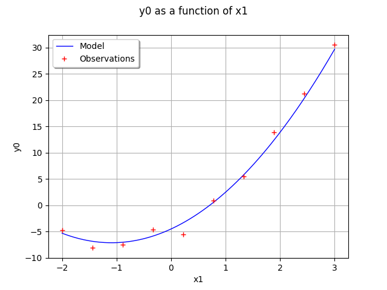
Define the distribution of observations
 conditional on model predictions
conditional on model predictions
Note that its parameter dimension is the one of  , so the model must be adjusted accordingly
, so the model must be adjusted accordingly
[9]:
conditional = ot.Normal()
conditional
[9]:
Normal(mu = 0, sigma = 1)
Define the mean
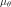
, the covariance matrix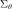
, then the prior distribution of the parameter .
[10]:
thetaPriorMean = [-3.,4.,1.]
[11]:
sigma0 = ot.Point([2.,1.,1.5]) # standard deviations
thetaPriorCovarianceMatrix = ot.CovarianceMatrix(paramDim)
for i in range(paramDim):
thetaPriorCovarianceMatrix[i, i] = sigma0[i]**2
prior = ot.Normal(thetaPriorMean, thetaPriorCovarianceMatrix)
prior.setDescription(['theta1', 'theta2', 'theta3'])
prior
[11]:
Normal(mu = [-3,4,1], sigma = [2,1,1.5], R = [[ 1 0 0 ]
[ 0 1 0 ]
[ 0 0 1 ]])
Proposal distribution: uniform.
[12]:
proposal = [ot.Uniform(-1., 1.)] * paramDim
proposal
[12]:
[class=Uniform name=Uniform dimension=1 a=-1 b=1,
class=Uniform name=Uniform dimension=1 a=-1 b=1,
class=Uniform name=Uniform dimension=1 a=-1 b=1]
Test the MCMC sampler¶
The MCMC sampler essentially computes the log-likelihood of the parameters.
[13]:
mymcmc = ot.MCMC(prior, conditional, model, x_obs, y_obs, thetaPriorMean)
[14]:
mymcmc.computeLogLikelihood(thetaPriorMean)
[14]:
-155.15171341233682
Test the Metropolis-Hastings sampler¶
Creation of the Random Walk Metropolis-Hastings (RWMH) sampler.
[15]:
initialState = thetaPriorMean
[16]:
RWMHsampler = ot.RandomWalkMetropolisHastings(
prior, conditional, model, x_obs, y_obs, initialState, proposal)
In order to check our model before simulating it, we compute the log-likelihood.
[17]:
RWMHsampler.computeLogLikelihood(initialState)
[17]:
-155.15171341233682
We observe that, as expected, the previous value is equal to the output of the same method in the MCMC object.
Tuning of the RWMH algorithm.
Strategy of calibration for the random walk (trivial example: default).
[18]:
strategy = ot.CalibrationStrategyCollection(paramDim)
RWMHsampler.setCalibrationStrategyPerComponent(strategy)
Other parameters.
[19]:
RWMHsampler.setVerbose(True)
RWMHsampler.setThinning(1)
RWMHsampler.setBurnIn(2000)
Generate a sample from the posterior distribution of the parameters theta.
[20]:
sampleSize = 10000
sample = RWMHsampler.getSample(sampleSize)
Look at the acceptance rate (basic checking of the efficiency of the tuning; value close to 0.2 usually recommended).
[21]:
RWMHsampler.getAcceptanceRate()
[21]:
[0.456667,0.2955,0.1305]
Build the distribution of the posterior by kernel smoothing.
[22]:
kernel = ot.KernelSmoothing()
posterior = kernel.build(sample)
Display prior vs posterior for each parameter.
[23]:
from openturns.viewer import View
import pylab as pl
fig = pl.figure(figsize=(12, 4))
for parameter_index in range(paramDim):
graph = posterior.getMarginal(parameter_index).drawPDF()
priorGraph = prior.getMarginal(parameter_index).drawPDF()
priorGraph.setColors(['blue'])
graph.add(priorGraph)
graph.setLegends(['Posterior', 'Prior'])
ax = fig.add_subplot(1, paramDim, parameter_index+1)
_ = ot.viewer.View(graph, figure=fig, axes=[ax])
_ = fig.suptitle("Bayesian calibration")
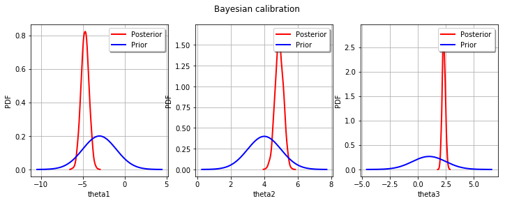